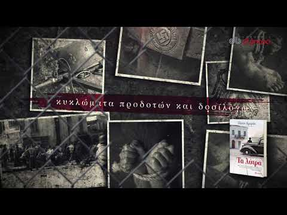

Σεπτέμβριος 1943 Οι πρώτες φλόγες του Εμφυλίου τυλίγουν τη χώρα. Υπό μυστηριώδεις συνθήκες εξαφανίζονται η εξάχρονη κόρη Γερμανού ανώτατου διπλωμάτη και ο πεντάχρονος γιος της Ελληνίδας υπηρέτριάς του. Η Αθήνα συνταράσσεται από τη διπλή απαγωγή. Ο υπαστυνόμος Νίκος Αγραφιώτης, που έχει επιστρέψει στην Ελλάδα με νέα ταυτότητα και διαλυμένη ζωή, αναλαμβάνει μια αποστολή που θα κρίνει σε μεγάλο βαθμό την πορεία των επιχειρήσεων των Συμμάχων στη Μεσόγειο. Τα σχέδιά του, όμως, θα ανατραπούν με δραματικό τρόπο, καθώς θα υποχρεωθεί να διεισδύσει στα άδυτα της Ειδικής Ασφάλειας για να εξαρθρώσει κυκλώματα προδοτών και να εξιχνιάσει την υπόθεση απαγωγής των παιδιών. Με τη βοήθεια μιας γυναίκας, ο Αγραφιώτης θα συνδεθεί με μυστικές πατριωτικές οργανώσεις της Αθήνας, θα περιπλανηθεί στα βουνά του Εμφυλίου και θα προσπαθήσει να μείνει αλώβητος μέσα στη «φωλιά του κακού» για να σώσει ανθρώπινες ζωές χωρίς να χάσει την ψυχή του. Μια διαρκής μάχη μεταξύ ευσυνειδησίας και προδοσίας, πατριωτισμού και ήθους, μα πάνω από όλα του ανθρωπισμού απέναντι στη θηριωδία.
|  |
Βρείτε περισσότερες πληροφορίες σχετικά με το βιβλίο: Τα Λύτρα.